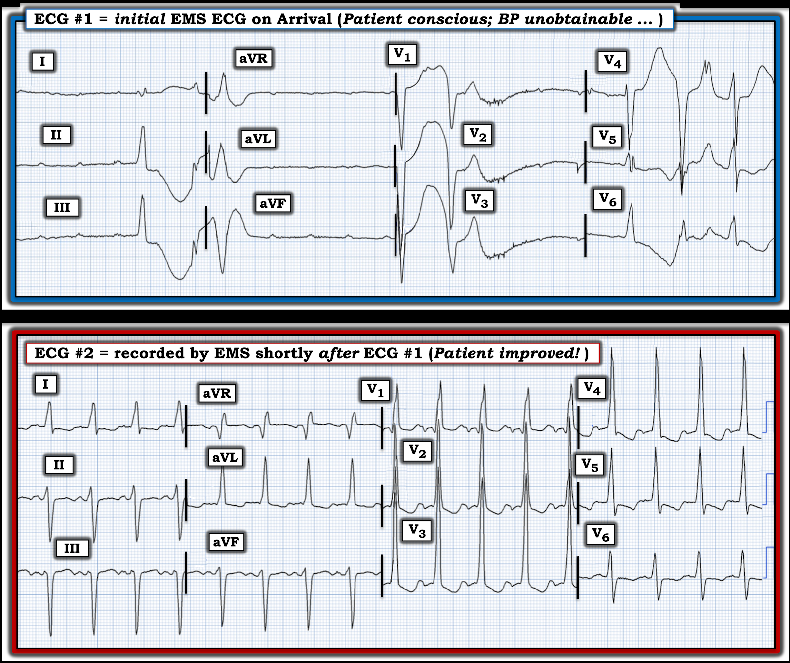
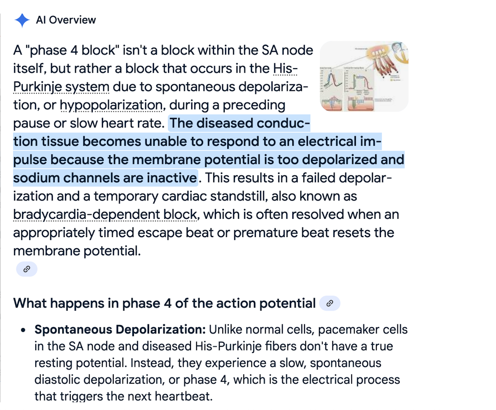
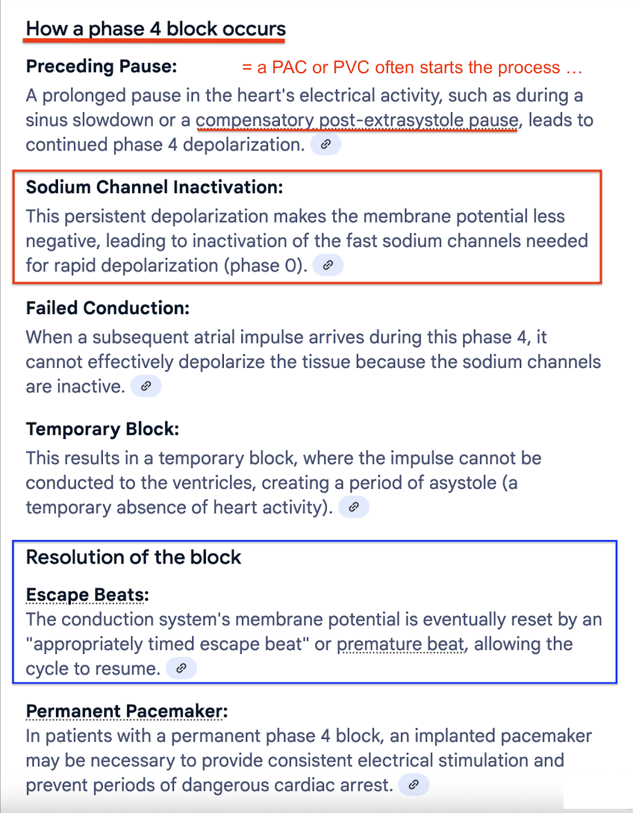

ECG Blog #419 — Nguyên nhân của điện tâm đồ #1?
Tôi được gửi 2 điện tâm đồ ở Hình 1 — ghi từ một người đàn ông lớn tuổi có nhịp tim "không đều đã nhiều năm". Không có bệnh sử rõ ràng về đau ngực gần đây — nhưng bệnh nhân "không được khỏe" trong tuần trước đó. Về 2 điện tâm đồ ở Hình 1:
- Điện tâm đồ #1 là bản ghi ban đầu do đội cấp cứu ngoài viện (EMS) (Emergency Medical Systems) ghi tại hiện trường — khi bệnh nhân tỉnh táo nhưng tụt huyết áp nặng.
- Điện tâm đồ #2 được đội EMS ghi một lúc ngắn sau điện tâm đồ #1 — nhưng trước khi dùng bất kỳ điều trị nào ngoài ASA. Như có thể hình dung — bệnh nhân đột nhiên "cảm thấy khỏe hơn nhiều".
CÂU HỎI:
- BẠN sẽ đọc 2 điện tâm đồ này như thế nào?
- — Điện tâm đồ #2 có thể liên quan thế nào đến điện tâm đồ #1?


SUY NGHĨ CỦA TÔI về 2 điện tâm đồ ở Hình 1:
Ngay cả khi không có dải nhịp dài — cũng dễ hiểu vì sao bệnh nhân hôm nay tụt huyết áp nặng đi kèm với điện tâm đồ #1.
- Hoạt động nhĩ có hiện diện ở điện tâm đồ #1 — dưới dạng các sóng P dương có vẻ đều ở mỗi chuyển đạo dưới — với tần số đều khoảng ~115 lần/phút.
- Tôi nghi rằng không sóng P nào ở điện tâm đồ #1 được dẫn truyền.
- Việc phát hiện hoạt động nhĩ khó hơn nhiều ở các chuyển đạo ngực do có nhiều nhiễu đường nền— dù bằng chứng hoạt động nhĩ với tần số tương tự có thấy được về cuối chuyển đạo V1.
- Dù vậy — vẫn thấy các phức bộ thất từng lúc với hình dạng thay đổi (dù bị nhiễu làm biến dạng nhiều).
- Khoảng ngưng dài nhất xảy ra ở các chuyển đạo aVR,aVL,aVF ghi đồng thời — không thấy phức bộ thất nào sau nhát thứ 1 ở các chuyển đạo này cho đến khi chuyển sang chuyển đạo V1,V2,V3 (tức là gần 12 ô lớn = 2.4 giây sau). Chúng ta không biết khoảng ngưng đã kéo dài bao lâu trước khi nhát thứ 1 ở điện tâm đồ #1 được ghi.
- NHẬN ĐỊNH LÂM SÀNG: Tôi sẽ đọc điện tâm đồ #1 là gợi ý gần như ngưng thất — với nhịp nền nhịp nhanh nhĩ, các khoảng ngưng kéo dài, và không có ổ thoát thất đáng tin cậy. Đây thường là nhịp tiền tử vong.
- ĐIỂM THEN CHỐT (PEARL) #1: Nhịp ở điện tâm đồ #1 không chỉ là "blốc AV hoàn toàn". Lý do là ngoài việc không có sóng P xoang nào được dẫn truyền — còn không có ổ tạo nhịp thoát khá đều thường thấy trong blốc AV hoàn toàn. Thay vào đó, ta thấy các khoảng ngưng kéo dài, thỉnh thoảng bị ngắt quãng bởi các phức bộ thất không đều (và không đáng tin cậy) phát sinh từ các vị trí khác nhau trong thất.
Trước bất kỳ điều trị nào — điện tâm đồ #2 được ghi:
- Nhịp xoang bình thường đã tự trở lại! Điều thú vị là — tần số (và hình dạng) của sóng P xoang hầu như không đổi so với các sóng P không dẫn truyền thấy ở điện tâm đồ #1, khác biệt là giờ đây các xung xoang được dẫn truyền 1:1 với khoảng PR bình thường!
LƯU Ý: Phức bộ QRS của các nhát được dẫn truyền ở điện tâm đồ #2 rộng. Hình dạng QRS đáng chú ý ở chỗ nó giống dẫn truyền kiểu RBBB (blốc nhánh phải — Right Bundle Branch Block) ở các chuyển đạo ngực — nhưng dẫn truyền kiểu LBBB (blốc nhánh trái — Left Bundle Branch Block) với trục lệch trái nhiều ở các chuyển đạo chi.
- Sóng R cao (hình dạng qR) ở chuyển đạo V1 của điện tâm đồ #2 — đi kèm với sóng S tận khá rộng ở chuyển đạo V6 — gợi ý dẫn truyền kiểu RBBB.
- Các phức bộ QRS giãn rộng chủ yếu dương ở chuyển đạo I và aVL của điện tâm đồ #2 — gợi ý dẫn truyền kiểu LBBB — với các phức bộ QRS chủ yếu âm ở mỗi chuyển đạo dưới cho thấy LAD (trục lệch trái — Left Axis Deviation) nhiều.
ĐIỂM THEN CHỐT (PEARL) #2: Như đã mô tả trong ECG Blog #394 — QRS giãn rộng khi có nhịp xoang, trong đó hình dạng QRS phù hợp với dẫn truyền kiểu RBBB ở các chuyển đạo ngực — nhưng dẫn truyền kiểu LBBB ở các chuyển đạo chi (nhất là khi kèm trục lệch về bên trái ) — gợi ý thực thể được gọi là MBBB (blốc nhánh ngụy trang — Masquerading Bundle Branch Block). Đây chính xác là hình ảnh hình dạng QRS mà ta thấy ở điện tâm đồ #2.
- Tôi ôn lại cách tiếp cận dễ áp dụng của mình để chẩn đoán các blốc nhánh trên điện tâm đồ trong ECG Blog #282 — và các blốc phân nhánh cùng blốc hai phân nhánh trong ECG Blog #203. Tóm lại — 3 chuyển đạo MẤU CHỐT cho phép chẩn đoán chính xác RBBB và LBBB trong vòng vài giây (!) — là chuyển đạo V1 bên phải và chuyển đạo I và V6 bên trái.
- Các rối loạn dẫn truyền trên thất không phù hợp với RBBB hay LBBB ở cả 3 chuyển đạo then chốt này được phân loại dễ nhất là IVCD (chậm dẫn truyền trong thất — IntraVentricular Conduction Defect) — nhóm này đại diện cho "kết cục chung" của nhiều quá trình sinh lý bệnh khác nhau.
- MBBB là một dạng đặc biệt của IVCD, dù ít gặp nhưng quan trọng cần nhận ra vì nó xác định một nhóm bệnh nhân có: i) Bệnh tim nền rất nặng; ii) Khuynh hướng cao hơn nhiều tiến triển thành blốc AV hoàn toàn (và cần máy tạo nhịp); và, iii) Tiên lượng lâu dài cực kỳ xấu.
- LƯU Ý: Các biến thể của "chủ đề" MBBB nêu trên là thường gặp. Do đó, sóng S thường đi kèm hình ảnh RBBB ở các chuyển đạo ngực bên V5,V6 có thể có hoặc không. Ở các chuyển đạo chi, thay vì hình ảnh LBBB điển hình — có thể thấy hình ảnh LAHB (blốc phân nhánh trái trước — Left Anterior HemiBlock) cực độ hơn (tức là với các phức bộ QRS rộng và chủ yếu [nếu không phải hoàn toàn] âm ở các chuyển đạo dưới — và với sóng s tận nhỏ hơn [cùn] ở chuyển đạo I và aVL).
ĐIỂM THEN CHỐT (PEARL) #3: Biết bệnh sử lâm sàng có thể giúp nhận ra các hình ảnh IVCD phù hợp với MBBB (tức là nếu bệnh nhân đã biết có bệnh tim nền nặng).
- Việc phân biệt với blốc hai phân nhánh đơn thuần (tức là với RBBB/LAHB) — có thể dễ hơn khi thấy một hoặc nhiều dấu hiệu sau: i) QRS dương ở chuyển đạo V1 mang tính đơn dạng hơn (thiếu dạng rsR' ba pha rõ nét với "tai thỏ" phải cao hơn như thấy trong RBBB điển hình); ii) Không có sóng S tận rộng ở chuyển đạo ngực bên V6; iii) Thấy QRS giãn rộng dương hoàn toàn (hoặc ít nhất chủ yếu dương) ở chuyển đạo I và/hoặc aVL, với không hơn một sóng s nhỏ, hẹp ở các chuyển đạo này; và/hoặc, iv) Thấy các phức bộ QRS giãn rộng, âm hoàn toàn (hoặc gần như âm hoàn toàn) ở các chuyển đạo dưới.
Còn các điện tâm đồ hôm nay thì sao?
Dù thiếu chi tiết về bệnh sử của bệnh nhân hôm nay — bệnh nhân lớn tuổi — ông đã có "nhịp tim không đều nhiều năm" — và điện tâm đồ ban đầu khi đội EMS đến ( = điện tâm đồ #1) rõ ràng gợi ý bệnh lý hệ thống dẫn truyền tiến triển với một nhịp có thể gây tử vong nếu không có sự tự chuyển sang bản ghi như ở điện tâm đồ #2.
- Trong bối cảnh lâm sàng này — các dấu hiệu ở điện tâm đồ #2 rõ ràng phù hợp với BBB ngụy trang.
- Cần đặt máy tạo nhịp vĩnh viễn.

==================================
Lời cảm ơn: Xin cảm ơn Max-Gordon-Hall (từ Batlow, New South Wales, Australia) về ca bệnh và bản ghi này.
==================================
Các Bài ECG Blog Liên quan đến Ca hôm nay:
- ECG Blog #205 — Ôn lại Cách tiếp cận hệ thống của tôi để đọc điện tâm đồ 12 chuyển đạo.
- ECG Blog #282 — ôn lại cách tiếp cận dễ áp dụng để chẩn đoán các blốc nhánh (RBBB, LBBB và IVCD) trên điện tâm đồ.
- ECG Blog #203 — ôn lại chẩn đoán trục, blốc phân nhánh và blốc hai phân nhánh trên điện tâm đồ.
- ECG Blog #394 — ôn lại một ca khác về BBB ngụy trang.
=======================
PHẦN BỔ SUNG #1 (ngày 6/3/2024):
=======================
Tiếp theo Bình luận tôi vừa nhận từ H.S.Cho — tôi xin mở rộng phần mô tả nhịp tim ở điện tâm đồ #1 của ca hôm nay.
- Với bệnh sử của ca hôm nay (tức là nhịp thấy ở điện tâm đồ #1 khởi phát đột ngột — và tự hết trong vòng một phút) — Thay vì "gần như ngưng thất" — nhịp này được mô tả đúng nhất là PD-PAVB (blốc nhĩ thất kịch phát phụ thuộc khoảng ngưng — Pause-Dependent Paroxysmal AtrioVentricular Block).
- Để rõ ràng — tôi đưa lại Hình 1 của ca hôm nay.
Hình 1: 2 điện tâm đồ của ca hôm nay.
Blốc nhĩ thất kịch phát (PAVB):
Như Bansal và cs. (J Arrhythmia 35:870-872, 2019) — Bosah và cs. (Cureus 14[7]: e27092, 2022) — và Uhm và cs. (Heart Rhythm Case Rep 4(5):197-199, 2018) đã mô tả — thực thể được gọi là PAVB là một nguyên nhân gây ngất dễ bị bỏ sót và có khả năng gây tử vong (có lẽ thường gặp hơn so với người ta vẫn nghĩ).
- PAVB đặc trưng bởi sự khởi phát đột ngột, bất ngờ của blốc AV hoàn toàn với nhịp thoát thất chậm xuất hiện — do đó gây ra một giai đoạn kéo dài không có QRS nào trên điện tâm đồ. Trước khoảng ngưng kéo dài — bệnh nhân có dẫn truyền AV 1:1 không kèm bằng chứng nào khác của blốc AV (đó là lý do vì sao sự khởi phát PAVB thường hoàn toàn không được nghi ngờ!).
- Vì khởi phát hoàn toàn bất ngờ và có khuynh hướng gây đột tử — PAVB khó ghi nhận được và bị chẩn đoán thiếu đáng kể.
- Đã có ba cơ chế gây PAVB được mô tả: i) Qua trung gian phế vị (tức là blốc do cường phế vị (vagotonic) — như mô tả trong ECG Blog #61, với các tài liệu tham khảo liệt kê ở cuối bài Blog này trích dẫn những trường hợp vô tâm thu thoáng qua do trương lực phế vị quá mức!); ii) PAVB nội tại (Pha 4 = phụ thuộc khoảng ngưng hoặc phụ thuộc nhịp chậm); — và, iii) Vô căn.
i) Blốc AV do cường phế vị:
Dạng PAVB này có thể lành tính khi do một đợt tăng vọt thoáng qua, mạnh mẽ của trương lực phó giao cảm ở một người vốn khỏe mạnh (như có thể xảy ra khi nôn dữ dội; một cơn ho dữ dội; phản ứng cường phế vị khi lấy máu).
- Vấn đề trong PAVB do cường phế vị khu trú bên trong nút AV.
- Thường có "tiền triệu" vã mồ hôi, buồn nôn, chóng mặt — bệnh nhân nhận biết mình sắp ngất.
- Dấu hiệu điện tâm đồ đặc trưng của PAVB do cường phế vị gồm tần số xoang chậm dần — thường đi kèm khoảng PR tăng dần và ổ thoát QRS hẹp — sau đó hồi phục với tần số xoang và khoảng PR dần trở lại bình thường.
ii) PAVB nội tại:
Cơ chế PAVB này có nhiều tên gọi — thường gặp nhất là "blốc AV pha 4" và/hoặc PD-PAVB (blốc nhĩ thất kịch phát phụ thuộc khoảng ngưng — Pause-Dependent Paroxysmal AtrioVentricular Block).
- PD-PAVB là cơ chế nhiều khả năng nhất của nhịp tim ở điện tâm đồ #1 của ca hôm nay. Bệnh lý nền là bệnh hệ thống His-Purkinje nặng (được gợi ý mạnh bởi sự hiện diện của MBBB ở điện tâm đồ #2 của ca hôm nay). Dạng PD-PAVB này nhiều khả năng gây tử vong trừ khi bệnh nhân được đặt máy tạo nhịp vĩnh viễn.
- Sinh lý bệnh thú vị của PD-PAVB là do tình cờ xuất hiện một PAC hoặc PVC "đúng thời điểm" khử cực một phần HPS (hệ thống His-Purkinje) bị bệnh tại một điểm cụ thể trong chu kỳ, khiến HPS vốn hoạt động kém không thể hoàn tất khử cực. Khoảng ngưng khử cực thất kéo dài sau đó có thể chỉ hết nếu một PAC hoặc PVC "đúng thời điểm" khác xảy ra đúng vào điểm cần thiết để "cài đặt lại" chu kỳ khử cực của HPS (điều này có lẽ giải thích vì sao bệnh nhân hôm nay tự hồi phục).
- Cần lưu ý — dù bệnh HPS nền nặng đã rõ qua MBBB thấy ở điện tâm đồ #1 của ca hôm nay — có tới 1/3 bệnh nhân PD-PAVB không có bằng chứng rối loạn dẫn truyền trên điện tâm đồ, do đó làm việc ghi nhận chẩn đoán này thêm phức tạp.
- ĐIỂM THEN CHỐT (PEARL) #4: Ngoài việc thấy MBBB ở điện tâm đồ #2 — việc tần số nhĩ vẫn như nhau ở cả điện tâm đồ #1 và điện tâm đồ #2 là thêm một lý do nữa cho thấy nhịp ở điện tâm đồ #1 không phải là PAVB do cường phế vị đơn thuần.
iii) PAVB vô căn:
Đây là dạng PAVB được mô tả gần đây nhất — trong đó các dấu hiệu không phù hợp với 2 dạng kia.
- Điện tâm đồ nền trước PAVB vô căn thường bình thường.
- Không thấy "yếu tố khởi phát" nào cho PAVB (tức là không có nguồn gây trương lực phế vị quá mức — và không thấy PAC/PVC khởi phát nào).
=====================================
LƯU Ý: Rối loạn dẫn truyền ở điện tâm đồ #1 của ca hôm nay khác với rối loạn trong ECG Blog #342 — trong đó nhịp ban đầu là AFib (tức là không có sóng P trong 6 nhát đầu của bản ghi này) — tiếp theo là một khoảng ngưng đường thẳng kéo dài (gần 5 giây) — cho đến khi cuối cùng thấy một phức bộ QRS có sóng P đi trước (có thể có hoặc không được dẫn truyền).
- Liệu khoảng ngưng đường thẳng kéo dài trong ví dụ ở Blog #342 này là một biến thể khác của PD-PAVB do bệnh nền nặng của hệ thống His-Purkinje — hay phản ánh bệnh nút SA nặng (tức là hội chứng suy nút xoang — Sick Sinus Syndrome) — hay nhiều khả năng nhất là sự kết hợp của cả hai, thì không chắc chắn được từ một điện tâm đồ duy nhất tôi được cung cấp.
- Dù vậy — ĐIỀU CỐT LÕI vẫn như nhau, cụ thể là nếu không tìm thấy nguyên nhân nào "sửa chữa được" — sẽ cần tạo nhịp vĩnh viễn.

=======================
PHẦN BỔ SUNG #2 (ngày 1/9/2025):
=======================
Xin ghi công WB Ren vì bình luận của anh trong EKG Club đã khiến tôi suy nghĩ lại về điện sinh lý hấp dẫn của hệ thống dẫn truyền tim.
- Bình luận của WB Ren liên quan đến hiện tượng thay đổi hình dạng sóng P, mà thay vì do ổ tạo nhịp nhĩ lang thang làm dịch chuyển vị trí hình thành xung trong nhĩ — đôi khi có thể do một hiện tượng tương tự như thấy ở ca hôm nay (tức là thay vì nút AV hay hệ thống dẫn truyền Purkinje bị bệnh — vấn đề có thể là blốc pha 4 ở một số chứ không phải tất cả các phần của nút SA — do đó gây thay đổi từng lúc hình dạng sóng P).
- Về những điều cơ bản của blốc pha 4 (blốc phụ thuộc nhịp chậm) — tôi thấy phần giải thích này trong ECGbook trực tuyến rất sáng tỏ.
- Có thể xem thêm ví dụ và giải thích về blốc pha 4 hệ thống Purkinje trong bài báo của Ulm và cs. HeartRhythm Case Rep 4(5):197-199, 2018.
- Với các khái niệm được minh họa qua đường link đến sách ECG trực tuyến ở trên — tôi thấy phần giải thích từng bước bằng AI về sinh lý của blốc pha 4 dễ hiểu hơn nhiều so với trước đây đối với tôi. Vì vậy tôi đã chép phần giải thích bằng AI này ở bên dưới.
====================================



